기계설계산업기사 (2014-08-17 기출문제)
1과목: 기계가공법 및 안전관리
1. 선삭에서 바이트의 윗면 경사각을 크게 하고 연강 등 연한 재질의 공작물을 고속 절삭할 때 생기는 칩(chip)의 형태는?
- 유동형
- 전단형
- 열단형
- 균열형
(정답률: 77%)

2. 밀링 머신에서 분할 및 윤곽가공을 할 때 이용되는 부속장치는?
- 밀링 바이스
- 회전 테이블
- 모방 밀링장치
- 슬로팅 장치
(정답률: 65%)
3. 표면 거칠기 측정법에 해당되지 않는 것은?
- 다이얼 게이지 이용 측정법
- 표준면과의 비교 측정법
- 광 절단식 표면 거칠기 측정법
- 현미 간섭식 표면 거칠기 측정법
(정답률: 68%)
4. 브로치 절삭날 피치를 구하는 식은? (단, P=피치, L=절삭날의 길이, C는 가공물 재질에 따른 상수이다.)
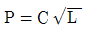
- P=C×L
- P=C×L2
- P=C2×L
(정답률: 55%)
5. 결합제의 주성분은 열경화성 합성수지 베크라이트로 결합력이 강하고 탄성이 커서 고속도강이나 광학유리등을 절단하기에 적합한 숫돌은?
- vitrified계 숫돌
- resinoid계 숫돌
- silicate계 숫돌
- rubber계 숫돌
(정답률: 58%)
6. 선반의 양센터 작업에서 주축의 회전을 공작물에 전달하기 위하여 사용되는 것은?
- 센터 드릴
- 돌리개
- 면판
- 방진구
(정답률: 70%)
7. 밀링가공에서 커터의 날 수 6개, 1날당 이송 0.2mm, 커터의 외경 40mm, 절삭속도 30m/min일 때 테이블의 이송속도는 약 몇 mm/min인가?
- 274
- 286
- 298
- 312
(정답률: 65%)
8. NC선반의 절삭사이클 중 내,외경 복합 반복 사이클에 해당하는 것은?
- G40
- G50
- G71
- G96
(정답률: 60%)
9. 연삭작업에서 글레이징(Glazing) 원인이 아닌 것은?
- 결합도가 너무 높다.
- 숫돌바퀴 원주 속도가 너무 빠르다.
- 숫돌 재질과 일감 재질이 적합하지 않다.
- 연한 일감 연삭시 발생한다.
(정답률: 56%)
10. 사고발생이 많이 일어나는 것에서 점차로 적게 일어나는 것에 대한 순서로 옳은 것은?
- 불안전한 조건 (→)불가항력 (→)불안전한 행위
- 불안전한 행위 (→)불가항력 (→)불안전한 조건
- 불안전한 행위 (→)불안전한 조건 (→)불가항력
- 불안전한 조건 (→)불안전한 행위 (→)불가항력
(정답률: 70%)
11. 밀링 머신의 크기를 번호로 나타낼 때 옳은 설명은?
- 번호가 클수록 기계는 크다.
- 호칭번호 No0 ( 0번 )은 없다.
- 인벌류트 커터의 번호에 준하여 나타낸다.
- 기계의 크기와는 관계가 없고 공작물 종류에 따라 번호를 붙인다.
(정답률: 73%)
12. 환봉을 황삭 가공하는데 이송을 0.1mm/rev로 하려고 한다. 바이트의 노즈 반경이 1.5mm 라고 한다면 이론상의 최대 표면 거칠기는?
- 8.3×10-4㎜
- 8.3×10-3㎜
- 8.3×10-5㎜
- 8.3×10-2㎜
(정답률: 44%)
13. 끼워 맞춤에서 H6g6는 무엇을 뜻하는가?
- 축 기준 6급 헐거운 끼워 맞춤
- 축 기준 6급 억지 끼워 맞춤
- 구멍 기준 6급 헐거운 끼워 맞춤
- 구멍 기준 6급 중간 끼워 맞춤
(정답률: 72%)
14. 액체 호닝의 특징으로 잘못 된 것은?
- 가공 시간이 짧다.
- 가공물의 피로강도를 저하시킨다.
- 형상이 복잡한 가공물도 쉽게 가공한다.
- 가공물 표면의 산화막이나 거스러미를 제거하기 쉽다.
(정답률: 68%)
15. 한계 게이지에 대한 설명 중 맞는 것은?
- 스냅 게이지는 최소 치수측을 통과측, 최대 치수측을 정지측이라 한다.
- 양쪽 모두 통과하면 그 부분은 공차 내에 있다.
- 플러그 게이지는 최대 치수측을 정지측, 최소 치수측을 통과측이라 한다.
- 통과측이 통과되지 않을 경우는 기준구멍보다 큰 구멍이다.
(정답률: 49%)
16. 측정기에 대한 설명으로 옳은 것은?
- 일반적으로 버니어 캘리퍼스가 마이크로미터보다 측정 정밀도가 높다.
- 사인바(sine bar)는 공작물의 내경을 측정한다.
- 다이얼 게이지는 각도 측정기이다.
- 스트레이트 에지(straight edge)는 평면도의 측정에 사용된다.
(정답률: 67%)
17. 드릴지그의 분류 중 상자형 지그에 포함되지 않는 것은?
- 개방형 지그
- 조립형 지그
- 평판형 지그
- 밀폐형 지그
(정답률: 52%)
18. 바깥지름이 200mm인 밀링커터를 100rpm으로 회전시키면 절삭속도는 약 몇 m/min 정도인가?
- 1.⑤
- 2.08
- 31.4
- 62.8
(정답률: 64%)
19. 어떤 도면에서 편심량을 4mm로 주어졌을 때, 실제 다이얼 게이지의 눈금의 변위량은 얼마로 나타나야 하는가?
- 2mm
- 4mm
- 8mm
- 0.5mm
(정답률: 74%)
20. 트위스트 드릴의 인선각(표준각 또는 날끝각)은 연강용에 대해서 몇 도( ° )를 표준으로 하는가?
- 110°
- 114°
- 118°
- 122°
(정답률: 73%)
2과목: 기계제도
21. 다음 필릿 용점부 기호의 설명으로 틀린 것은?
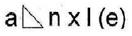
- l : 용접부의 길이
- (e) : 인접한 용접부 간격
- n : 용접부의 개수
- a : 용접부 목길이
(정답률: 65%)
22. 구름 베어링의 호칭 번호가 6001 일 때 안지름은 몇 mm인가?
- 12
- 11
- 10
- 13
(정답률: 82%)
23. 핸들이나 차바퀴 등의 암, 림, 리브 및 훅 등을 나타낼 때의 단면으로 가장 적합한 것은?
- 한쪽 단면도
- 회전도시 단면도
- 부분 단면도
- 온 단면도
(정답률: 83%)
24. 축의 치수가
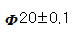
이고 그 축의 기하공차가 다음과 같다면 최대실체공차방식에서 실효치수는 얼마인가?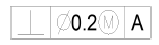
- 19.6
- 19.7
- 20.3
- 20.4
(정답률: 80%)
25. 그림과 같은 입체도에서 제 3각법에 의해 3면도로 적합하게 투상한 것은?
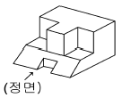
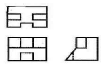
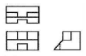
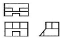
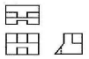
(정답률: 73%)
26. 제 3각법으로 투상한 정면도와 우측면도가 그림과 같을 때 평면도로 가장 적합한 것은?
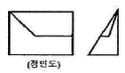
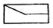
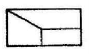
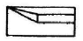
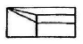
(정답률: 67%)
27. 기어의 제도에 관하여 설명한 것으로 잘못된 것은?
- 잇봉우리원은 굵은 실선으로 표시한다.
- 피치원은 가는 1점 쇄선으로 표시한다.
- 이골원은 가는 실선으로 표시한다.
- 잇줄방향은 통상 3개의 가는 1점 쇄선으로 표시한다.
(정답률: 72%)
28. 배관의 도시 방법에서 도급 계약의 경계를 나타낼 때 사용하는 선은?
- 가는 1점 쇄선
- 가는 2점 쇄선
- 매우 굵은 1점 쇄선
- 매우 굵은 2점 쇄선
(정답률: 53%)
29. 구름베어링의 상세한 간략 도시방법에서 복렬 자동 조심볼 베어링의 도시기호는?(오류 신고가 접수된 문제입니다. 반드시 정답과 해설을 확인하시기 바랍니다.)
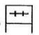
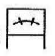
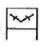
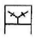
(정답률: 69%)
30. 그림과 같은 표면의 상태를 기호로 표시하기 위한 표면의 결 표시 기호에서 d는 무엇을 표시하는가?
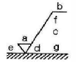
- a에 대한 기준길이 또는 컷 오프 값
- 기준 길이, 평가 길이
- 줄무늬 방향의 기호
- 가공방법 기호
(정답률: 69%)
31. 줄무늬 방향의 기호에 대한 설명으로 틀린 것은?
- = : 가공에 의한 컷의 줄무늬 방향이 기호를 기입한 그림의 투영면에 평행
- X : 가공에 의한 컷의 줄무늬 방향이 다방면으로 교차 또는 무방향
- C : 가공에 의한 컷의 줄무늬가 기호를 기입한 면의 중심에 대하여 거의 동심원 모양
- R : 가공에 의한 컷의 줄무늬가 기호를 기입한 면의 중심에 대하여 거의 방사 모양
(정답률: 69%)
32. 구멍에 끼워 맞추기 위한 구멍, 볼트, 리벳의 기호 표시에서 가까운 면에 카운터 싱크가 있는 구멍에 현장에서 드릴 가공 및 끼워 맞춤을 할 때의 기호에 해당하는 것은?
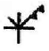
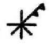
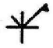
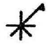
(정답률: 49%)
33. 재료 기호가 “STC 140"으로 되어 있을 때 이 재료의 명칭으로 옳은 것은?
- 합금 공구강 강재
- 탄소 공구강 강재
- 기계구조용 탄소 강재
- 탄소강 주강품
(정답률: 72%)
34. 기준치수가 30, 최대 하용치수가 29.98, 최소 허용치수가 29.95일 때 아래 치수 허용차는 얼마인가?
- +0.⑤
- +0.03
- -0.⑤
- -0.03
(정답률: 71%)
35. 끼워맞춤의 치수가
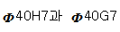
일 때 치수 공차값을 비교한 설명으로 옳은 것은?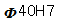
이 크다.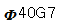
이 크다.- 치수 공차는 같다.
- 비교할 수 없다.
(정답률: 52%)
36. 그림과 같은 I형강의 표시방법으로 올바르게 된 것은? (단, L은 형강의 길이이다.)
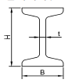
- IH × B × t × L
- IB × H × t - L
- IB × H × t × L
- IH × B × t - L
(정답률: 72%)
37. 나사의 종류 중 ISO 규격에 있는 관용 테이퍼 나사에서 테이퍼 암나사를 표시하는 기호는?
- PT
- PS
- Rp
- Rc
(정답률: 73%)
38. KS 기계 재료 기호 중 스프링 강재인 것은?
- SPS
- SBC
- SM
- STS
(정답률: 76%)
39. 그림과 같은 3각법으로 정투상한 정면도와 평면도에 대한 우측면도로 가장 적합한 것은?
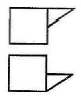
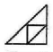
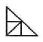
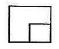
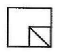
(정답률: 64%)
40. 그림과 같은 입체도에서 화살표 방향의 투상도가 정면도일 경우 평면도로 가장 적합한 것은?
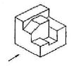
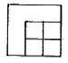
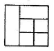
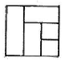
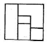
(정답률: 83%)
3과목: 기계설계 및 기계재료
41. Ni-Fe계 실용합금이 아닌 것은?
- 엘린바
- 인바
- 미하나이트
- 플라티나이트
(정답률: 48%)
42. 강을 표준상태로 하기 위하여 가공조직의 균일화, 결정립의 미세화, 기계적 성질의 향상을 목적으로 오스테나이트가 되는 온도까지 가열하여 공냉시키는 열처리 방법은?
- 뜨임
- 담금질
- 오스템퍼
- 노멀라이징
(정답률: 54%)
43. 알루미늄 주조 합금으로 내열용으로 사용되는 합금이 아닌 것은?
- Y합금
- 로엑스
- 코비탈륨
- 실루민
(정답률: 38%)
44. 친화력이 큰 성분 금속이 화학적으로 결합하여 다른 성질을 가지는 독립된 화합물을 만드는 것은?
- 금속간 화합물
- 고용체
- 공정 합금
- 동소 변태
(정답률: 69%)
45. 강의 표면을 고온산화에 견디기 위한 시멘테이션법은?(오류 신고가 접수된 문제입니다. 반드시 정답과 해설을 확인하시기 바랍니다.)
- 보오론라이징
- 칼로나이징
- 실리콘나이징
- 나이트라이징
(정답률: 34%)
46. 7-3황동에 Sn 1% 첨가한 것으로 전연성이 좋아 관 또는 판을 만들어 증발기와 열교환기 등에 사용되는 주석 황동은?
- 에드미럴티 황동
- 네이벌 황동
- 알루미늄 황동
- 망간 황동
(정답률: 71%)
47. 18-8 스테인레스강(stainless steel)에서 용접 취약성을 일으키는 가장 큰 원인은?
- 입계탄화물의 석출
- 자경성 발생
- 뜨임 메짐성
- 균열의 생성
(정답률: 42%)
48. α-Fe, γ-Fe과 같은 상(相)이 온도 그 밖의 외적조건에 의해 결정격자형이 변하는 것을 무엇이라 하는가?
- 열변태
- 자기변태
- 동소변태
- 무확산변태
(정답률: 64%)
49. 입방체의 각 모서리에 한 개씩의 원자와 입방체의 중심에 한 개의 원자가 존재하는 매우 간단한 결정격자로서 Cr, Mo등이 속하는 결정 격자는?
- 면심입방격자
- 체심입방격자
- 조밀육방격자
- 자기입방격자
(정답률: 60%)
50. 아래 그림에서 Austenite강을 재결정 온도이하, Ms점 이상의 온도 범위에서 소성가공을 한 후 소입(quenching)하는 열처리는?
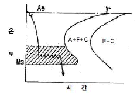
- Austempering
- Ausforming
- Marquenching
- Time quenching
(정답률: 39%)
51. 볼 베어링에서 수명에 대한 설명 중 맞는 것은?
- 베어링에 작용하는 하중의 3승에 비례한다.
- 베어링에 작용하는 하중의 3승에 반비례한다.
- 베어링에 작용하는 하중의 10/3승에 비례한다.
- 베어링에 작용하는 하중의 10/3승에 반비례한다.
(정답률: 70%)
52. 그림과 같은 맞대기 용점 이음에서, 인장하중 W[N], 강판의 두께 h[mm]라 할 때 용접길이 ℓ[mm]를 구하는 식으로 가장 옳은 것은? (단, 상하의 용접부 목두께가 각각 t1[mm], t2[mm]이고, 용접부에서 발생하는 인장응력 бt[N/mm2]이다.)
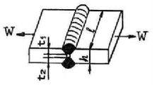
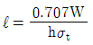
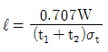
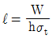
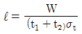
(정답률: 42%)
53. 묻힘 키(sunk key)에서 키의 폭 10mm, 키의 유효길이 54mm, 키의 높이 8mm, 축의 지름 45mm일 때 최대 전달토크는 약 몇 N · m인가? (단, 키(key)의 허용전단응력 35N/mm2이다.)
- 425
- 643
- 846
- 1024
(정답률: 26%)
54. 공기 스프링에 대한 설명으로 거리가 먼 것은?
- 공기량에 따라 스프링 계수의 크기를 조절할 수 있다.
- 감쇠특성이 크므로 작은 진동을 흡수할 수 있다.
- 측면방향으로의 강성도 좋은 편이다.
- 구조가 복잡하고 제작비가 비싸다.
(정답률: 49%)
55. 평벨트 전동에서 유효장력이란 무엇인가?
- 벨트 긴장측 장력과 이완측 장력과의 차를 말한다.
- 벨트 긴장측 장력과 이완측 장력과의 비를 말한다.
- 벨트 긴장측 장력과 이완측 장력을 평균한 값이다.
- 벨트 긴장측 장력과 이완측 장력의 합을 말한다.
(정답률: 68%)
56. 다음 중 자동하중 브레이크가 아닌 것은?
- 웜 브레이크
- 나사 브레이크
- 원통 브레이크
- 캠 브레이크
(정답률: 45%)
57. 이끝원 지름이 104mm, 잇수는 50인 표준 스퍼기어의 모듈은 얼마인가?
- 5
- 4
- 3
- 2
(정답률: 81%)
58. 리드각이 α , 마찰계수 μ(=tanρ)인 나사의 자립조건으로 옳은 것은? (단, ρ는 마찰각이다.)
- 2α ＜ ρ
- α ＜ ρ
- α ＜ 2ρ
- α ＞ρ
(정답률: 65%)
59. 굽힘모멘트만을 받는 중공축(中空軸)의 허용 굽힘응력бb, 중공축의 바깥지름 D, 여기에 작용하는 굽힘모멘트 M일 때, 중공축의 안지름 d를 구하는 식으로 옳은 것은?
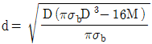
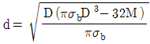
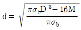
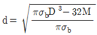
(정답률: 52%)
60. 다음 중 인장응력을 구하는 식으로 맞는 것은? (단, б는 인장응력, A는 단면적, P는 인장하중 이다.)
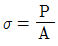
- б=P×A
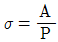
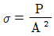
(정답률: 79%)
4과목: 컴퓨터응용설계
61. 퍼거슨(Ferguson) 곡면의 방정식에는 경계조건으로 16개의 벡터가 필요하다. 그 중에서 곡면내부의 볼록한 정도에 영향을 주는 것은 무엇인가?
- 꼭지점 벡터
- U방향 접선벡터
- V방향 접선벡터
- 꼬임 벡터
(정답률: 53%)
62. CAD 정보를 이용한 공학적 해석분야와 가장 거리가 먼 것은?
- 질량특성 분석
- 정밀한 도면 제도
- 공차 분석
- 유한 요소 해석
(정답률: 44%)
63. IGES 파일 포맷에서 엔터티들에 관한 실제데이터가 기록되어 있는 부분은?
- 스타트 섹션(start section)
- 글로벌 섹션(global section)
- 디렉토리 엔트리 섹션(directory entry section)
- 파라미터 데이터 섹션(parameter data section)
(정답률: 60%)
64. 정보단위의 개념이 작은 단위에서 큰 단위로 바르게 나열된 것은?
- Field < Record < File < Data Base
- File < Data Base < Field < Record
- File < Data Base < Record < Field
- Field < File < Record < Data Base
(정답률: 56%)
65. NC 데이터에 의한 NC가공작업을 하기 쉬운 모델링은?
- 와이어 프레임(wire frame) 모델링
- 서피스(surface) 모델링
- 솔리드(solid) 모델링
- 윈도우(window) 모델링
(정답률: 63%)
66. 3차원 형상의 모델링 방식에서 CSG(Constructive Solid Geometry) 방식을 설명한 것은?
- 투시도 작성이 용이하다.
- 전개도의 작성이 용이하다.
- 기본 입체형상을 만들기 어려울 때 사용되는 모델링 방법이다.
- 기본 입체형상의 불연산(boolean operation)에 의해 모델링 한다.
(정답률: 66%)
67. 점P(1,1)을 x방향으로 2이동, y방향으로 -1이동한 후에 원점을 중심으로 30도 회전시켰을 때 좌표는?
(정답률: 36%)
68. 3차원 CAD에서 최대 변환 매트릭스는?(오류 신고가 접수된 문제입니다. 반드시 정답과 해설을 확인하시기 바랍니다.)
- 2 × 3
- 3 × 2
- 3 × 3
- 4 × 4
(정답률: 55%)
69. 다음 식에 의해서 정의되는 도형 요소는 무엇인가?
- 원
- 직선
- 곡선
- 점
(정답률: 53%)
70. 변환(Transformation)에서 변환함수와 관계가 적은 것은?
- 이동(Translation)
- 축적(Scaling)
- 생산(Production)
- 회전(Rotation)
(정답률: 77%)
71. 도면상 중심이 (10,10)인 2차원의 도형을 PC의 CRT상에 나타내기 위하여, 일련의 좌표변환을 통하여 CRT중심에 실물 크기로 그리기 위한 작업이 아닌 것은?
- 도형의 중심점이 원점이 되도록 이동변환
- CRT 좌표와 도면좌표의 비율에 따라 축적변환
- 관측변환을 통하여 관측좌표계를 물체좌표계와 일치
- 변환된 도형을 CRT 좌표계의 중심으로 이동
(정답률: 45%)
72. 제시된 단면곡선을 안내곡선에 따라 이동하면서 생기는 궤적을 나타낸 곡면은?
- 룰드 곡면
- 스윕 곡면
- 보간 곡면
- 블랜드 곡면
(정답률: 79%)
73. 다음은 파라메트릭 모델링을 이용한 형상 모델링 과정들을 정리한 것이다. 가장 적절한 순서로 나열된 것은?
- 다 - 가 - 나 - 라
- 나 - 다 - 가 - 라
- 다 - 나 - 가 - 라
- 가 - 다 - 나 - 라
(정답률: 68%)
74. 컴퓨터 이용 자동 공정계획(CAPP)에 가장 적합한 모델링 방법은?
- 특징형상 모델링
- 투영 모델링
- 와이어 프레임 모델링
- 곡면 모델링
(정답률: 71%)
75. 데이터변환 파일 중 대표적인 표준 파일 형식이 아닌 것은?
- IGES
- ASCII
- DXF
- STEP
(정답률: 76%)
76. 2차 Bezier 곡선은?
- 직선
- 원
- 타원
- 포물선
(정답률: 51%)
77. CAD 시스템의 출력장치(플로터)를 구분하는 요인이라고 할수 없는 것은?
- 플로팅 헤드 제어 방식에 의한 구분
- 출력되는 그림 및 도형의 해상도로 구분
- 출력할 수 있는 도형(그림)의 크기로 구분
- 출력장치(플로터)의 사용 전압에 의한 구분
(정답률: 66%)
78. CAD 용어에 대한 설명 중 틀린 것은?
- Pan : 도면의 다른 영역을 보기 위해 디스플레이 윈도우를 이동시키는 행위
- Zoom : 화면상의 이미지를 실제 사이즈를 포함하여 확대 또는 축소
- Clipping : 필요 없는 요소를 제거하는 방법, 주로 그래픽에서 클리핑 윈도로 정의된 영역 밖에 존재하는 요소들을 제거하는 것을 의미
- Toggle : 명령의 실행 또는 마우스 클릭시마다 On 또는 Off가 번갈아 나타나는 세팅
(정답률: 72%)
79. B-rep 모델링 방식의 특성이 아닌 것은?
- 화면 재생시간이 적게 소요된다.
- 3면도, 투시도, 전개도 작성이 용이하다.
- 데이터의 상호 교환이 쉽다.
- 입체의 표면적 계산이 어렵다.
(정답률: 54%)
80. 3차원 공간 상의 3점 에 의해 정의 되는 평면에 수직인 단위 법선 벡터의 표현으로 옳은 것은? (단, ·는 벡터내적, ×는 벡터외적을 나타냄)
(정답률: 47%)